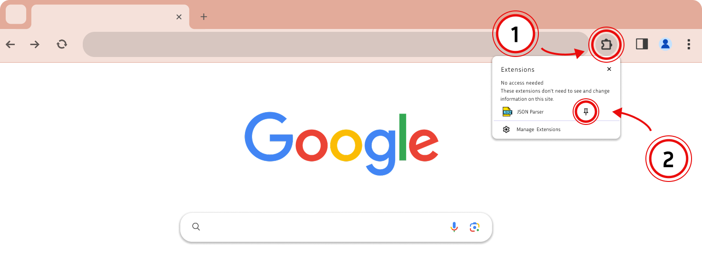
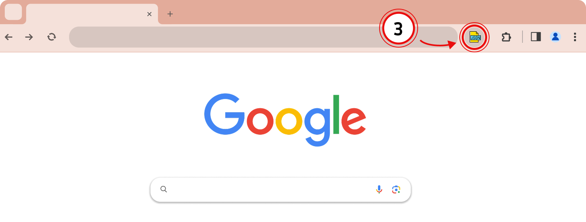

JSON Parser installed successfully!
Click the puzzle piece (1) in the top right of your browser. Then, click the little pin (2) next to the extension:

Open the extension (3) on any page to start using JSON Parser:
